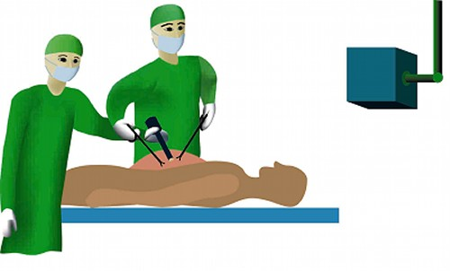

|
ウエッジプリズムを用いた視野可変腹腔鏡の開発
従来の腹腔鏡下手術の問題点
従来の開腹手術に対して、近年腹腔鏡下手術が数多く実施されている。腹腔鏡下手術とは腹壁に１～２ｃｍの小さな穴を数箇所開け、そこに細い筒状のカメラ
（腹腔鏡）や鉗子（細い棒の先にピンセットの付いたような器具）などを挿入し、術者は腹腔鏡の画像を映すモニタを見ながら、鉗子などで手術を行う術式であ
る。腹腔鏡下手術は傷口が小さく、患者の負担が小さくて済むことが特長である。
しかし腹腔鏡下手術にも数多くの問題点がある。例えば腹腔鏡の映す視野を変えたいとき、下の図のように腹腔鏡本体を大きく振る必要がある。
そのため腹腔鏡と体内臓器、鉗子、助手などが干渉してしまう問題がある。
|  |
|
図１：従来の腹腔鏡下手術の様子。腹腔鏡の視野を変えるには、腹腔鏡本体を大きく動かす必要がある。 |
2枚のウェッジプリズムを用いた新しい腹腔鏡
上記問題点を解消するために、私たちは図２に示すようなウエッジプリズムを用いた視野可変腹腔鏡を開発した。ウェッジプリズムとはプリズム内に進入する光
線を屈折させる光学素子である。このウェッジプリズムを2枚重ねて独立に回るようにすると、視野前方の2次元平面内で視点を移動させることができる。この
腹腔鏡の先端には図３のように２枚のウエッジプリズムが装着され、モータによって独立に回転する機構となっている。
評価実験では、ミニブタに対して従来の腹腔鏡下手術と同様の麻酔法による気腹法で行い、視野移動操作と画質の評価を行った。図４は実験の様子と、モニタ
表示倍率8倍にて撮影した正面および上下左右方向における鏡筒前方50mmの肝臓画像である。視野の移動により肝臓のほぼ全体を観察することが可能であ
り、手術に耐えうる良好な画質を得ている。
|
| 図２：ウエッジプリズムを用いた視野可変腹腔鏡 |
|
| 図３：本腹腔鏡の先端部の構成 |
|
| 図４：実験の様子 |
ウェッジプリズム式視野可変腹腔鏡の利点
このような機構によって、視野を変えるときは腹腔鏡の鏡筒のみを回せばよく、内視鏡本体を大きく動かす必要がない。これにより、腹腔鏡本体の移動により
占める作業範囲を極力小さく抑えることが可能となる。これは手術支援ロボットとしては高い安全性を有しており、また、術野の妨げにならないため、他のシス
テムとの統合にも有利である、他領域への応用が可能といった利点を持つ。
図５に標準の腹腔鏡使用時の作業領域と本装置の作業領域の比較を示す。通常の腹腔鏡は腹壁の挿入点を中心にピボット運動する。腹腔鏡をマニピューレータ
で把持する場合はマニピュレータ駆動範囲が必要になる。一方ウェッジプリズム式では、鏡筒駆動ギヤボックスは内視鏡と一体化しており、視野を変更しても鏡
筒が回転するだけで装置の位置と向きは変化しない。不意に動かしたことによって腹腔鏡の先端と臓器との接触、鉗子との衝突事故を防ぐことができる。
|
|
図５：ウェッジプリズム式腹腔鏡と現行の腹腔鏡の作業領域の比較 |
Related Papers:
| 1 |
Kobayashi E, Masamune K, Sakuma I, Dohi T.
A Wide-Angle View Endoscope System Using Wedge Prisms. MICCAI 2000.
Pittsburg, 2000:661-668. |
| 2 |
Hashimoto T, Kobayashi E, Sakuma I,
Shinohara K, Hashizume M, Dohi T. Development of Wide-Angle-View
Laparoscope Using Wedge Prisms. Journal of Robotics and Mechatronics
2004;16:129-137. |
| 3 |
高田祐平、小林英津子、青木英祐、橋本健正、佐久間一郎、小西晃造、橋爪誠、土肥健純：ウェッ
ジプリズムを用いた視野可変腹腔鏡の改良および画像評価、日本コンピュータ外科学会誌、vol.8、pp.97-102、2006 |
| 4 |
小林英津子、佐久間一郎、土肥健純 ： ウエッジプリズムを用いた広角視野内視鏡、第９回日本
コンピュータ外科学会大会論文集、pp.77～78、2000 |
| 5 |
中村、小林、佐久間、土肥 ： ウエッジプリズムを用いた広角視野内視鏡の開発＜第２報＞、第
１０回日本コンピュータ外科学会大会論文集、pp.125～126、2001 |
| 6 |
橋本、小林、中村、佐久間、土肥 ： ウエッジプリズムを用いた広角視野内視鏡の開発＜第３
報＞、第１１回日本コンピュータ外科学会大会論文集、pp.29～30、2002 |
| 7 |
橋本健正、小林英津子、佐久間一郎、小西晃造、橋爪誠、土肥健純：ウエッジプリズムを用いた視
野可変腹腔鏡の開発＜第4報＞～視野移動評価実験～、第12回日本コンピュータ外科学会論文集、2003 |
| 8 |
高田祐平、橋本健正、青木英祐、小林英津子、佐久間一郎、小西晃造、橋爪誠、土肥健純：ウエッ
ジプリズムを用いた視野可変腹腔鏡の開発＜第5
報＞～機構の改良と評価試験～、第14回日本コンピュータ外科学会大会論文集、pp.125-126、2004 |
|